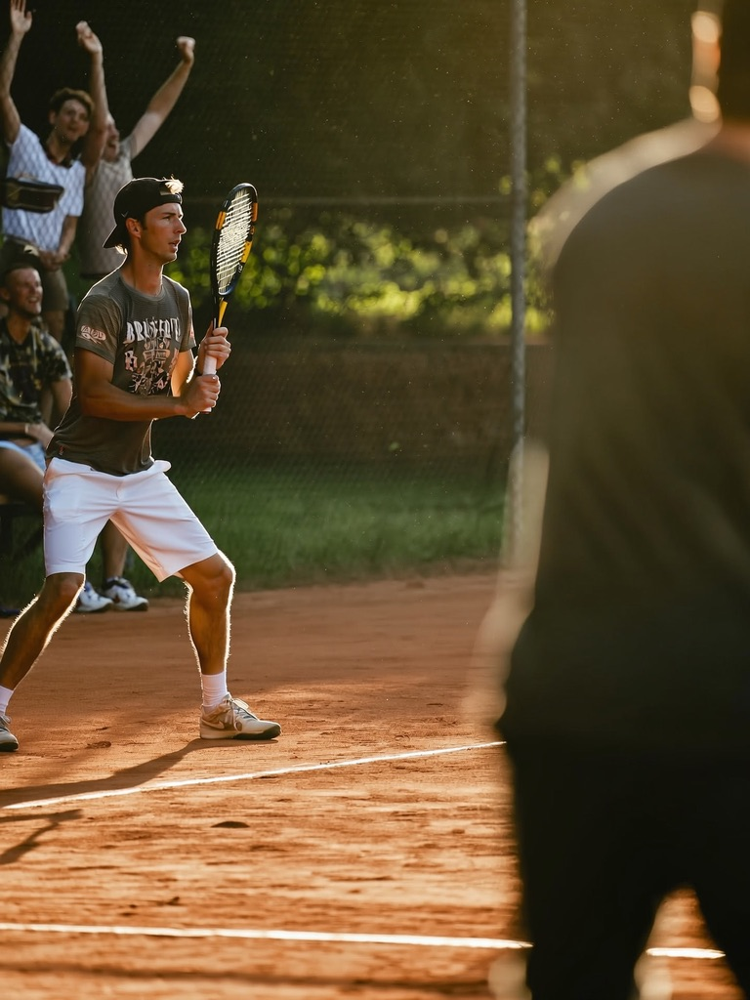
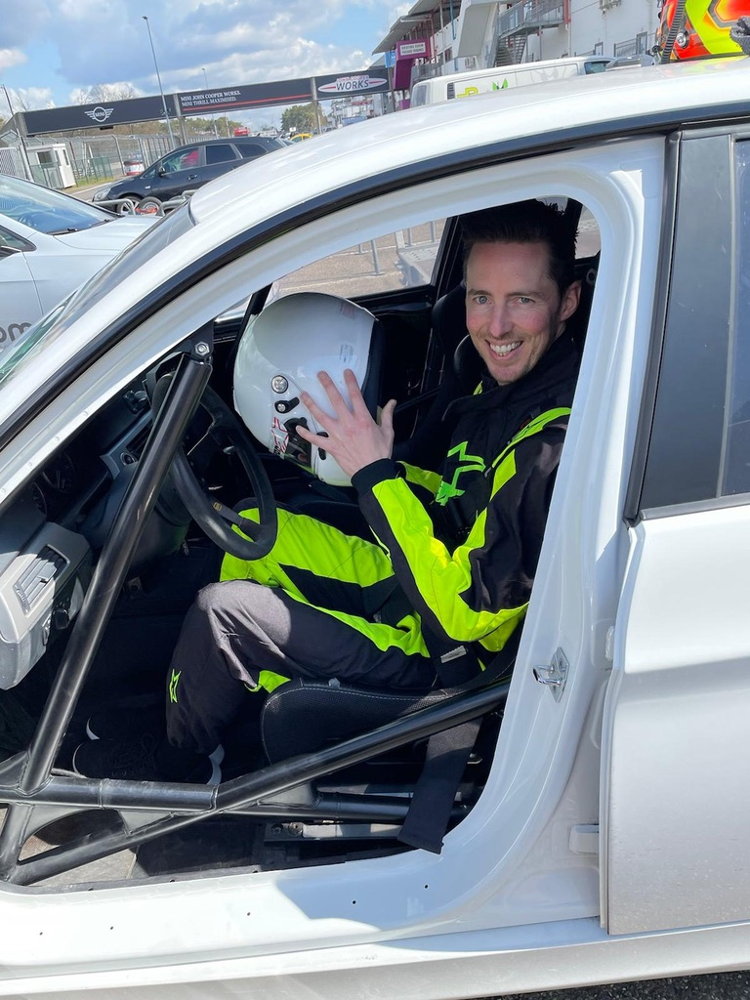
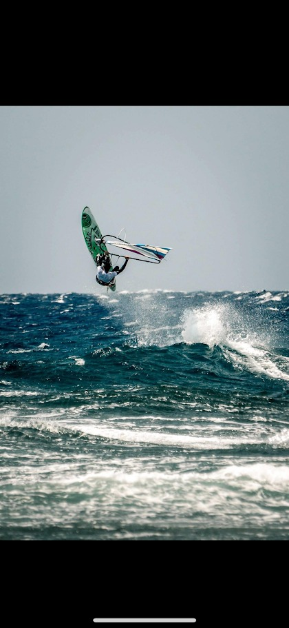

Nieuwe dingen ontdekken is mijn motor.
Ook buiten de code.
Melodic vibes — think Tomorrowland. Fietsen. Met de kids naar de speeltuin. En diepgaande gesprekken.
Als ik iets vastpak, laat ik het pas los vanaf dat het werkt — dat het perfect marcheert zoals het moet marcheren. Vandaar de naam.
En daarnaast bouw ik software.
Dat begon toen ik in de verkoop naast een developer zat die met AI bouwde, en ik dacht: dat kan ik ook. Het bleek waar. En het is niet meer gestopt.
Eerlijk: zonder AI was dat voor mij niet mogelijk geweest. Mét AI wel. Dat is geen detail — dat is het hele verhaal.

De software die je écht nodig hebt, bestaat vaak niet.
Iemand die ik goed ken startte zijn zaak en zocht iets simpels: zijn voorraad ingeven en bijhouden. Software genoeg — maar alleen grote, logge pakketten vol dingen die hij nooit zou gebruiken. Net dat ene stuk dat hij nodig had, bestond niet.
Dus bouwde ik het. Dagen blijven schaven tot het écht klopte. Hij gebruikt het vandaag nog, elke dag.
Ik vergelijk bouwen graag met een architect die een huis zet: het mooiste is iets maken waar iemand anders écht mee verder kan. Dat is mijn grootste voldoening. Niet de demo — wat blijft draaien.

Mensen die mij goed kennen, zeggen het zo: een belachelijk hoog empathisch vermogen.
In dit vak is dat geen soft skill. Ik bouw pas als ik voel hoe jouw dag echt loopt — waar je zoekt, wat je overtikt, wat je in je hoofd meedraagt. Daarom past wat ik maak bij hoe jij werkt, en niet omgekeerd.
Eerst juist, dan snel.
Ik kom uit de IT, sinds 2005 — installeren, configureren, troubleshooten: van internet, telefonie en digitale tv tot enterprise-support bij Cisco en mijn eigen IT-bedrijf. Daar leer je kijken wat er écht gebeurt.
AI versnelt alleen wat eerst juist zit. De fundering moet staan — en die zie je pas als je luistert naar hoe mensen echt werken.
Een demo is geen systeem.
Met AI maak je snel iets dat op het scherm werkt. Maar jij draait er elke dag op — dus het moet volgende maand nog kloppen, niet alleen vandaag. Daar zit mijn werk: in wat blijft draaien.
Wat ik niet ben.
Geen boekhouder, geen jurist, geen toolverkoper. En niet alles moet automatisch. Past het niet? Dan zeg ik dat meteen — liever een eerlijk nee dan dat je vastzit aan iets dat niet werkt.

Eén plek waar het bij jou vastloopt?
Een offerte, je facturatie, je opvolging — die ene plek waar het werk in je hoofd blijft hangen. Beschrijf 'm in een paar zinnen. Binnen 24u weet je of ik kan helpen, ook als dat nee is.